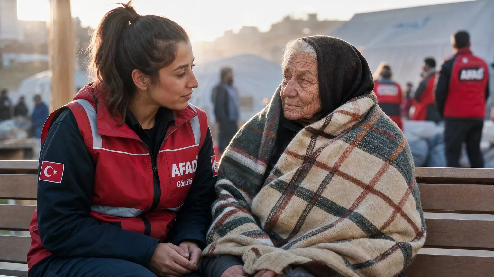

Deprem Sonrası Psikolojik İlk Yardım (PİY) Rehberi 2026
Deprem sonrası fiziksel kurtarma kadar psikolojik ilk yardım da hayati önemdir. Dünya Sağlık Örgütü'nün PİY modeli, herkesin uygulayabileceği temel destek tekniklerini öğretir. 6 Şubat 2023 sonrası Türkiye'nin Acil Müdahale Zinciri'nde PİY zorunlu hale getirildi. Bu rehberde 8 temel adım detaylı.
Psikolojik İlk Yardım (PİY) Nedir?
Psikolojik İlk Yardım (PİY/PFA - Psychological First Aid), 2011'de Dünya Sağlık Örgütü (DSÖ) tarafından standartlaştırılmış, afet sonrası ilk dakikalardan itibaren herkesin uygulayabileceği destek modeli. Profesyonel terapi değildir; akut stresi yönetmek, ikincil travmayı önlemek ve insanları profesyonel destek kaynaklarına yönlendirmek için tasarlanmıştır.
PİY'in 3 ana ilkesi: (1) Bak (Look): Ortamı ve insanın durumunu gözlemle. (2) Dinle (Listen): Empatiyle dinle, çözüm sunma. (3) Bağla (Link): Profesyonel desteğe yönlendir.
Deprem Sonrası Yaşanan Normal Duygusal Tepkiler
Aşağıdaki tepkiler 'normal'dir ve 4-6 hafta içinde kademeli azalır:
Akut tepkiler (ilk 1-3 gün): Şok, hissizlik, ağlama, titreme, mide bulantısı, uyku bozukluğu, anksiyete krizi.
Kısa vadeli (1-4 hafta): Tekrarlayan rüyalar, ses-ışıkla irkilme, yorgunluk, dikkat dağınıklığı, suçluluk hissi (hayatta kaldığı için).
Orta vadeli (1-6 ay): Depresyon belirtileri, sosyal izolasyon, alkol/madde kullanımı artışı, fiziksel ağrılar.
Bu tepkiler patolojik değildir — beyin travmayı işliyor. Ancak 4-6 ayı geçer ve günlük yaşamı engellerse profesyonel destek şarttır.
Akut Stres Bozukluğu ile PTSD Arasındaki Fark
Akut Stres Bozukluğu (ASD): Travma sonrası ilk 1 ay. Belirtiler: yeniden yaşama (flashback), uyuma zorluğu, kaçınma davranışları. Çoğu insan kendiliğinden iyileşir.
Travma Sonrası Stres Bozukluğu (PTSD): Belirtiler 1 aydan uzun sürerse. Tedavi gerekir. EMDR, bilişsel davranışçı terapi, ilaç kombinasyonu yaygın yöntemler.
Önemli: ASD'nin %30-50'si PTSD'ye dönüşür. Bu nedenle ilk 4 hafta içinde aktif takip kritiktir.
Psikolojik İlk Yardımın 8 Temel Adımı (DSÖ Modeli)
1. Güvenli ortam sağla: Kişinin fiziksel olarak güvende olduğundan emin ol. Soğuk/sıcak korumalı, su, sandık vb.
2. Sakin yaklaşım: Yavaş konuş, ses tonunu alçak tut, doğrudan göz teması ama yoğun değil.
3. Dinle ama soru sorma: 'Ne hissediyorsun?' yerine 'Yanındayım'.
4. Temel ihtiyaçları karşıla: Su, sıcak içecek, battaniye, telefon şarjı.
5. Suçlamadan, yargılamadan kabul: 'Ağlamamalısın' veya 'Daha kötüsünü yaşayanlar var' deme.
6. Yakınlara bağlama: Aile, arkadaş ile telefon görüşmesi düzenle.
7. Bilgilendirme: Resmi açıklamalar, hangi kurumlardan yardım alınabileceği.
8. Profesyonel desteğe yönlendirme: Belirti süresi 2 haftayı geçerse psikiyatrist/psikolog.
Yetişkinlere Nasıl Yaklaşılmalı?
Yetişkinlerle PİY uygularken: (1) Onların yardım istediğinden emin ol; istemiyorsa yanında ol ama zorla konuşturma. (2) Hikayesini paylaşmasını zorlama — bazen sessizlik iyileştirici. (3) Pratik destek (yemek hazırlama, çocuk bakma) sözel destekten daha etkilidir.
Erkekler genellikle 'iyi olduğum' tutumunu sergiler ama içeride çöküntü yaşıyor olabilir. Davranış değişimlerini gözlemle: aşırı sessizlik, alkol, agresif tepkiler.
Çocuklarda Travma Belirtileri ve Yaklaşım Yöntemleri
Çocuk yaş gruplarına göre belirtiler:
0-2 yaş: Aşırı bağlanma, gece uyanmalar, beslenme reddi.
3-6 yaş: Regresyon (parmak emme, alt ıslatma), tekrarlayan oyun (deprem oyunu), karanlıktan korkma.
7-12 yaş: Konsantrasyon düşüklüğü, fiziksel ağrılar (baş, mide), saldırganlık, suçluluk.
13+ yaş: Yetişkin benzeri PTSD belirtileri + okuldan kaçınma, alkol/madde, intihar düşünceleri.
Yaklaşım: rutinleri korumak (uyku saati, yemek), çizim yoluyla ifade, oyun terapisi öğeleri. Çocuklarda deprem psikolojisi rehberi.
Yaşlı Bireylerde Deprem Sonrası Ruhsal Destek
Yaşlılar afetlerde ek risk grubudur: kronik hastalıklar, sosyal izolasyon, fiziksel kırılganlık. Belirtiler: hafıza problemleri (depresyon-kaynaklı 'pseudo-demans'), aşırı pasiflik, beslenme reddi, intihar düşünceleri.
Yaklaşım: (1) Kayıplarını dinle (eşi, evi, anılarını içeren eşyaları). (2) Sosyal bağlarını koru (komşular, dini liderler). (3) Tıbbi durumlarını izle (kronik ilaçların kesilmesi tehlikeli). Yaşlılar için deprem rehberi.
Kurtarma Ekiplerinde Tükenmişlik ve Destek
AFAD, itfaiye, sağlık personeli, gönüllüler ikincil travma riski yüksektir. Aktif görevleri sırasında dahi PİY uygulanmalı.
Belirtiler: emosyonel kayıtsızlık, alkol kullanımı, geri çekilme, intihar düşünceleri. 6 Şubat sonrası Türkiye'de 23 sağlık personeli intihar etti — sistematik destek eksikliği.
Çözüm: vardiya sistemi (max 12 saat), ekip içi paylaşım toplantıları (debriefing), izinli istirahat günleri, profesyonel terapi opsiyonu.
Profesyonel Yardım Gerektiren Durumlar: Ne Zaman Uzmana Başvurulmalı?
Aşağıdaki durumlarda uzman desteği şart: (1) İntihar veya kendine zarar düşünceleri. (2) 4 haftayı geçen ciddi uyku/iştah problemleri. (3) Halusinasyonlar veya gerçeklikten kopuş. (4) İşe veya okula gidememe. (5) Alkol/madde kullanımı belirgin artış. (6) Aile içi şiddet artışı.
Aciliyet: 112 arayın veya en yakın acil servise gidin. İntihar düşünceleri varsa kişiyi yalnız bırakmayın.
Türkiye'de Afet Psikolojisi Destek Kaynakları
Resmi destek kaynakları:
(1) AFAD Psikososyal Destek Hattı: 122 (afet sonrası 7/24 ücretsiz).
(2) Sağlık Bakanlığı Toplum Ruh Sağlığı Merkezleri (TRSM): İl bazlı ücretsiz psikiyatri.
(3) Aile ve Sosyal Politikalar Bakanlığı: Aile danışma merkezleri (ALO 183).
(4) Türk Psikologlar Derneği: Afet sonrası gönüllü psikolog ağı (turkpsikolog.org).
(5) Üniversite klinikler: Bedava veya çok düşük ücretli terapi.
(6) Online platformlar: Hayy, Psikolog.com, BiHo.com — kredi kartlı ama hızlı erişim.
Sıkça Sorulan Sorular
Deprem korkusu yıllar sonra geri gelebilir mi?
Evet, 'gecikmiş PTSD' olarak bilinir. Yeni bir tetikleyici (haber, başka bir deprem) eski travmayı yeniden uyandırabilir. Profesyonel destek alabilirsiniz.
Çocuğumun deprem korkusu için ona film izlettirebilir miyim?
Hayır, doğrudan deprem görseli izletme. Bunun yerine 'kahraman çocuk' temalı, deprem sonrası nasıl yardım edileceğini gösteren çocuk kitapları okuyun.
Anti-depresan deprem PTSD'sinde işe yarar mı?
Evet, SSRI grubu (örn. sertraline) PTSD tedavisinde etkilidir. Ancak ilaç tek başına çözüm değildir; mutlaka terapi ile birlikte uygulanmalıdır.
Eşim depremden sonra çok sinirli oldu, normal mi?
Evet, irritabilite (sinirlilik) PTSD'nin yaygın belirtilerindendir. 4-6 hafta içinde geçmezse uzman desteği önerilir.
Ben de bir kurtarma gönüllüsüyüm, kendi psikolojimi nasıl korurum?
Kendi PİY: vardiyaları aşmayın, ekip arkadaşlarınızla paylaşın, evde alkolü azaltın, fizik egzersiz yapın. 4 haftada bir profesyonel danışman görüşmesi ideal.